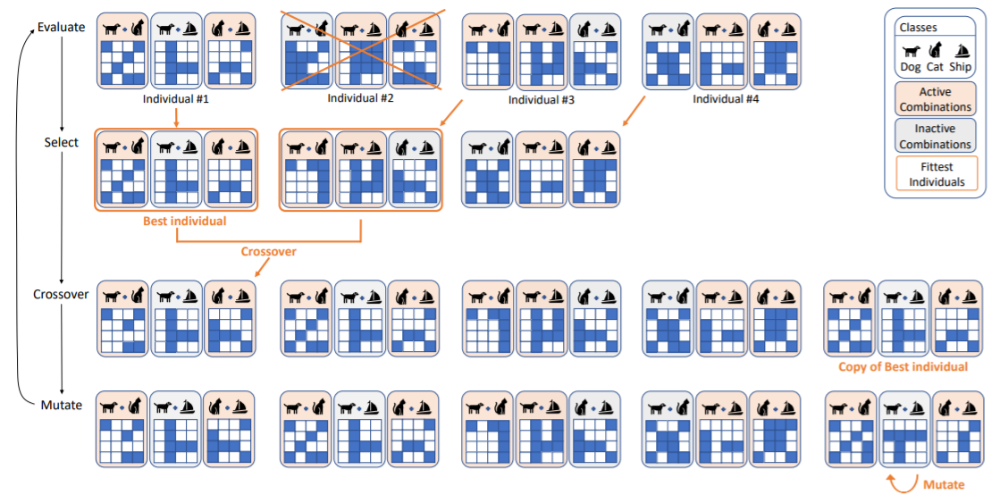

Paola Cascante-Bonilla
I am a Ph.D. student in Computer Science at the University of Virginia advised by Prof. Vicente Ordóñez Román, working on computer vision and language. I received my B.S. in Engineering at the Tecnológico de Costa Rica. Previously I spent 10 years working as a Software Engineer at different Tech Companies.
05/2021. Featured as the talent of May in the Costa Rican Talent Network Abroad (Ticotal). National Science Academy, Costa Rica.
01-10/2021. Co-organizing the LatinXinCV research workshop at CVPR 2021, ICML 2021, ICCV 2021. Co-chairing the Mentorship Program.
02/2021. Curriculum Labeling got accepted to AAAI 2021.
01/2021. Accepted a Summer PhD Internship at the MIT-IBM Watson AI Lab. []
08/2020. Invited to give a workshop at the International Meeting on Artificial Intelligence and its Applications (RIIAA).
| Curriculum Labeling: Revisiting Pseudo-Labeling for Semi-Supervised Learning. Paola Cascante-Bonilla, Fuwen Tan, Yanjun Qi, Vicente Ordonez. The 35th AAAI Conference on Artificial Intelligence. AAAI 2021. Virtual Conference. February 2021. [arxiv] [code] [bibtex] |
||
 |
Drill-down: Interactive Retrieval of Complex Scenes using Natural Language Queries. Fuwen Tan, Paola Cascante-Bonilla, Xiaoxiao Guo, Hui Wu, Song Feng, Vicente Ordonez. Conf. on Neural Information Processing Systems. NeurIPS 2019. Vancouver, Canada. December 2019. [arxiv] [bibtex] |
|
| Chat-crowd: A Dialog-based Platform for Visual Layout Composition. Paola Cascante-Bonilla, Xuwang Yin, Vicente Ordonez, Song Feng. North American Chapter of the Association for Computational Linguistics. NAACL 2019. System Demonstrations. Minneapolis, Minnesota. June 2019. [arxiv] [project page] [code] [bibtex] |
|  | Evolving Image Compositions for Feature Representation Learning. Paola Cascante-Bonilla, Arshdeep Sekhon, Yanjun Qi, Vicente Ordonez. [arxiv] |
|
 |
Moviescope: Large-scale Analysis of Movies using Multiple Modalities. Paola Cascante-Bonilla, Kalpathy Sitaraman, Mengjia Luo, Vicente Ordonez. [arxiv] [project page] [techxplore article] |
 |
Variational Image Captioning Using Deterministic Attention. Paola Cascante-Bonilla, Hyun Jae Cho, Alphonse N Akakpo. [report] [code] |


Drummer
2002 - 2016.